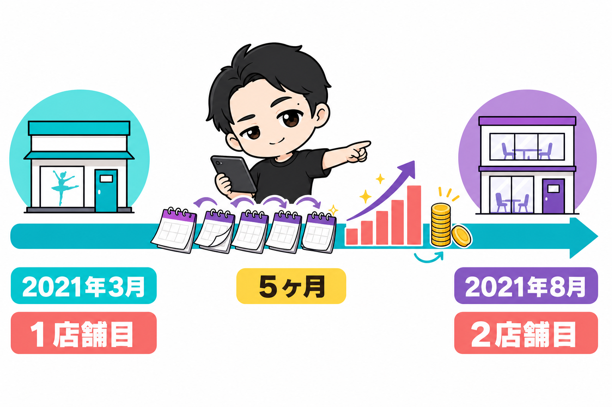
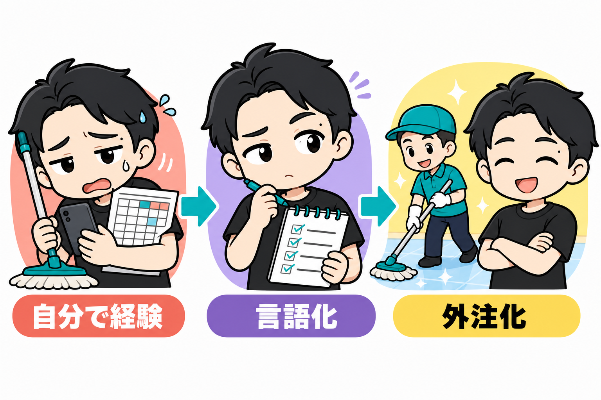

ぼくが1店舗目を出したのは、2021年3月です。
自宅近くでダンススタジオをオープンしました。
2店舗目は、その年の8月です。
間隔は、5ヶ月でした。
今日は「2店舗目をいつ出すか」と「外注化をいつ始めるか」の話をします。

2店舗目の判断は、シンプルでした
1店舗目のダンススタジオが、月10万〜15万円の利益を順調に出していたからです。
「これはいけるな」
そう思って、どんどん出していくことにしました。
かっこいい分析があったわけではありません。
でも、数字が順調かどうかは毎月見ていました。
感覚ではなく、スプレッドシートの数字で「いける」と言える状態だったことが、判断のすべてです。
2店舗目は、別ジャンルでした
ちなみに、ぼくの2店舗目は貸会議室です。
1店舗目とは、違うジャンル。
同じ物件に部屋がたくさん空いていて、ちょうど貸出をスタートしたタイミングだったんです。
家賃も安かったので、一気に3部屋を借りました。
資金は、苦しくならなかった
「2店舗目を出して、お金は大丈夫だったんですか?」
これ、よく聞かれます。
ぼくは特に苦しくなりませんでした。
理由は、物件がトントンと見つかるわけではないからです。
良い物件を待っている間に、1店舗目の回収が進みます。
ぼくの1店舗目は、初期費用90万円。
7ヶ月で回収しました。
次の物件を契約する頃には、1店舗目を出したときと同じような資金状態に戻っているんです。
計算はしてください。
でも、過度に怖がる必要はありません。
外注化は「言語化できたら」

もうひとつ、セットでよく聞かれるのが「いつから人に任せるか」です。
ぼくは1店舗目・2店舗目のときは、全部自分でやっていました。
掃除も、お客様対応も、売上の管理も。
掃除は初めのうちは毎日入りました。
最初に、どういう業務が日常で起きるのかを自分で体験する。
やり方が自分で分かっていないと、外注さんを雇っても「こういう風にやってください」が言えません。
だから外注化の基準は、店舗数ではありません。
業務内容が自分でしっかり分かったら。言語化できる状態になったら。
そうなったら、1店舗目の途中でも外注化していいです。
3〜4店舗が、自力の限界です
参考までに、ぼくが「もう無理だ」となったラインも書いておきます。
毎日の清掃が、3〜4店舗になると回りません。
特にパーティースペースを3〜4店舗、自分で掃除すると、かなり疲弊します。
そうなる前に、外注化をしてください。
疲弊してから仕組みを作るのは、しんどいので。
まとめ
- 2店舗目の判断は「1店舗目の数字が順調か」。ぼくは月10万〜15万の利益が続いていたので「いける」と判断して、5ヶ月で出しました
- 資金は、物件を待つ間に回収が進む。計算はする、でも怖がりすぎない
- 外注化は店舗数ではなく「言語化できたら」
- 自力の限界は3〜4店舗。疲弊する前に外注化
あなたの1店舗目、業務を言語化できていますか?
できているなら、もう次に進んでいい合図です。
▼もう1つの副業、AI社員だけのeBay輸出店の実録🐹
https://note.com/cham_ebay
▼ブログ(レンスペ×eBay、全記事まとめ)
https://rental-space.net